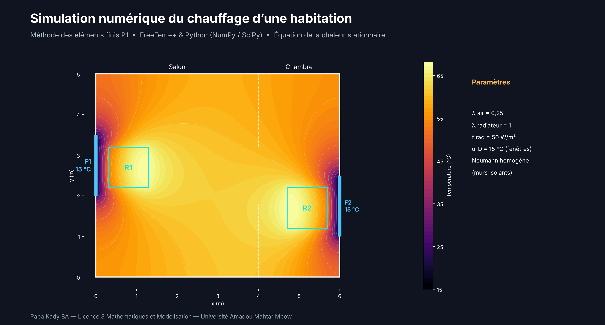

Projet tutoré
Simulation numérique du chauffage d'une habitation
Étude de la distribution de température dans une habitation à l'aide d'un modèle mathématique fondé sur une équation aux dérivées partielles et de la méthode des éléments finis.
FreeFem++ · Python · Maillage · Éléments finis